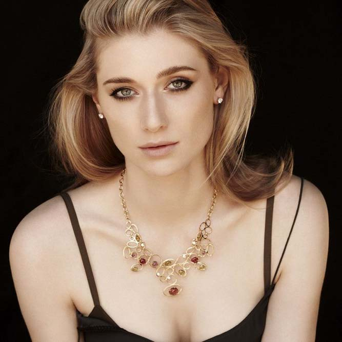

Mélanie Laurent
(1983-)
Mélanie Laurent was born in Paris,France.She is the daughter of Annick,a ballet teacher,and Pierre,a voice actor
Elizabeth Debicki
(1990-)

Debicki was born in Paris to a Polish father and an Australian mother of Irish descent,who were both dancers
Audrey Hepburn
(1929-1993)
Audrey Hepburn was a British actress and humanitarian.Recognised as a film and fashion icon,Hepburn was active during Hollywood's Golden Age
Margot Robbie
(1990-)
Australian actress Margot Robbie was raised on the Gold Coast,spending much of her time at the farm felonging to her grandparents
Clémence Poésy
(1982-)
Clémence Poésy is a French actress and fashion model.After starting on the stage as a child,Poésy had dramatic education,and has been active in both film and television since 1999
Gal Gadot
(1985-)
Gal Gadot is an Israeli actress and fashion model.She won the Miss Israel title in 2004 and went on to represent Israel at 2004 Miss Universe beauty pageant
 Beautiful women
Beautiful women


 Every year the Anita Borg Institute holds the Grace Hopper Celebration of Women in Comuting conference to bring the search and career interests of women in computing to the forefont
Every year the Anita Borg Institute holds the Grace Hopper Celebration of Women in Comuting conference to bring the search and career interests of women in computing to the forefont